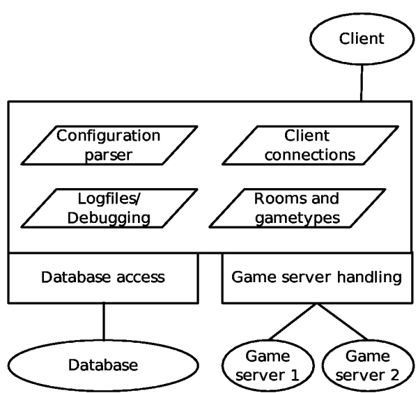

This document introduces the design of the GGZ server (ggzd) and explains how it works. Additional reading is suggested in the GGZ Gaming Zone Database document and the GGZ Hosting Guide.
The GGZ Gaming Zone server, named ggzd, is a Unix daemon written in C. It handles connections from (GGZ) clients in multiple threads, and launches games as external processes, with whom it also keeps a connection. Data received from either the clients or the game servers is passed to the other connection and/or stored in its database.
It consists of multiple subsystems and links statically to two libraries which are also used by other programmes: the database abstraction library, used by ggzduedit to manually manipulate player entries, and the game server communication library ggzdmod, used also by the games themselves. Further dependencies are libggz, expat for the XML protocol handling, and gettext to display translated messages. Optionally, howl can be included to announce its service on a local network, where it can be detected by a GGZ core client (Zeroconf broadcast).

The database can either be embedded or running as an external process, even on another host. Supported databases include DB4, SQlite, MySQL and PostgreSQL.
The connections to the clients and to the game servers are always using TCP/IP, although the latter ones are restricted to local connections.
When ggzd starts up, it will read command line arguments first, and configuration files second. Depending on the configuration, a message of the day file (MOTD) as well as the game rooms and game type description files will be read in. It will then open the log files, and fork itself into the background. There are still some smaller tasks to do before the service can be activated: It announces the service to the LAN (optional), initializes its TLS library wrapper (optional), and binds to the configured port. From then on, clients are able to connect.
The server will run in the foreground if the --foreground option has been given to it, which is very useful for debugging. Logging can happen to a configured log file, and (in addition) some log types can be given on the command line to appear on stdout, like ggzd -F --log=all. The types are all documented in the configuration file. The server compile-time configuration can be shown with --specs. Additional settings are internal to the source code and include the hard limits on the maximum number of game types, the maximum length of user names and the like.
During the connection period of a client, there are a number of events which can occur. The first one is to handle the login procedure, which might require player authentication or registration. The second is to handle player room changes and chat messages. The third is to handle games, which means launching a game server, putting the player (and all those who join) at the table, and receive the game result afterwards, which might involve storing them into the database.
In addition to the database, which is under complete control of ggzd, each game is assigned a private data directory which can be used to save game information. This includes savegames, to which only the path is stored in the ggzd database.
The GGZ server is aware of the concept of privileges. Depending on the status of a player (anonymous, registered or administrator), actions might or might not be possible. In general, only administrators may broadcast messages to all rooms and enter restricted rooms, and only registered users (including admins) may get entries in the statistics database, although anonymous users are registered there in the participation list.